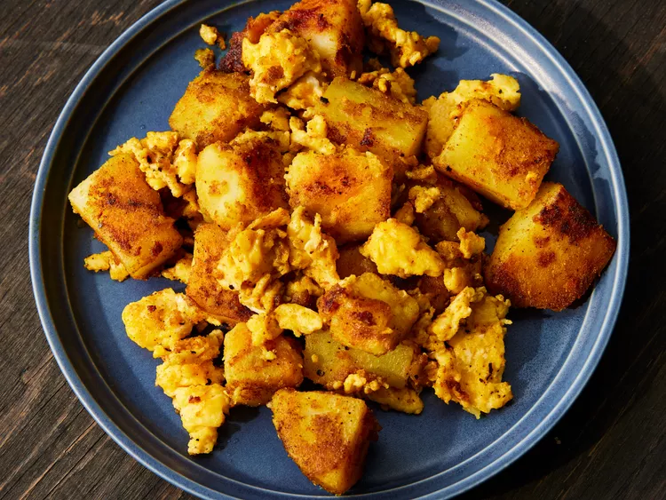

Spicy Potatoes and Scrambled Eggs

Description
This Spicy Potatoes and Scrambled Eggs recipe takes a little work, but it is so satisfying and filling that it's worth it!
Ingredients
- 2 medium potatoes, scrubbed
- 4 tablespoons vegetable oil, divided
- ½ teaspoon ground cumin
- ½ teaspoon ground coriander
- ½ teaspoon turmeric powder
- ½ teaspoon chili powder (Optional)
- ½ teaspoon salt
- 3 large eggs, beaten
- salt and pepper to taste
Steps
- Gather all ingredients.
- Use a fork to pierce potato skins. Microwave potatoes on high until tender, 7 to 8 minutes. Let cool briefly, then peel and cut into small cubes.
- Heat 2 tablespoons oil in a skillet over medium-high heat. Stir in cumin, coriander, turmeric, chili powder, and 1/2 teaspoon salt, then add potatoes. Cook, stirring occasionally, until crispy and golden brown, 5 to 10 minutes.
- Meanwhile, heat 2 tablespoons oil in another skillet over medium-high heat. Pour eggs into the skillet; cook and stir until eggs are set, about 5 minutes. Season with salt and pepper and serve with potatoes.